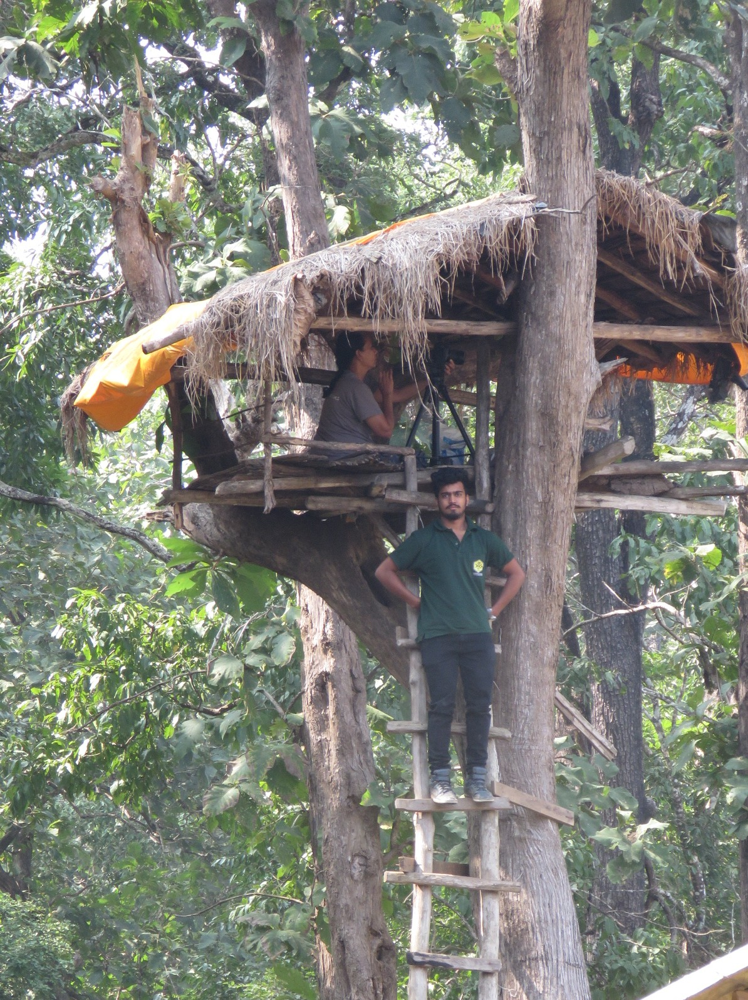
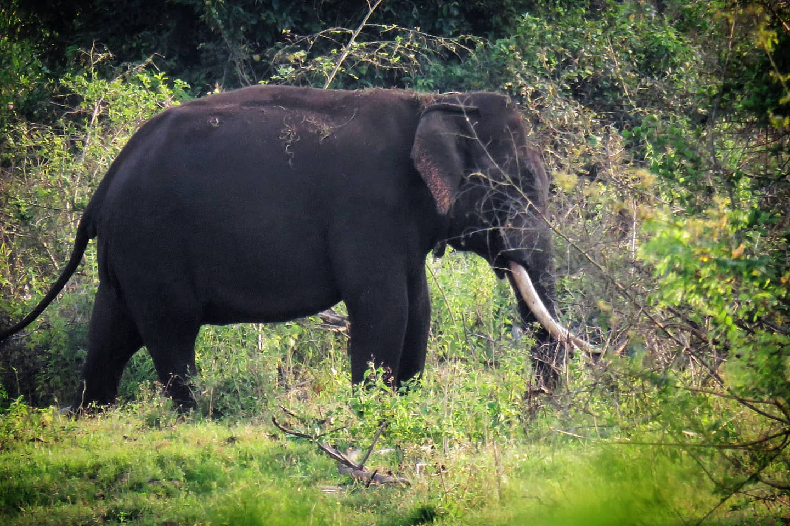

Harin Aiyanna
Forest Science graduate • Ecological Modelling & GIS enthusiast • Nature Conservationist
“Protecting species and landscapes through earth observation and collaboration.”
Forest Science graduate • Ecological Modelling & GIS enthusiast • Nature Conservationist
“Protecting species and landscapes through earth observation and collaboration.”


Welcome to my page. I am a passionate researcher working on how climate change reshapes species habitats and ecological interactions. My work integrates remote sensing, spatial modeling, collaboration and community-based conservation efforts to bridge data-driven science with field realities. I have actively led large-scale human–elephant conflict mitigation programs involving over 500 farmers, developed climate-informed species distribution models, and several projects on invasive species prediction in India and timber tree climate resilience in Italy. I am currently pursuing a PhD focused on keystone species habitat modeling under future climate scenarios at the University of Padua in collaboration with Wageningen University & Research. Claiming bit of expertise in tools such as QGIS, ArcGIS, R, MaxEnt, STELLA, Zonation, and Python, I aim to link keystone species habitat modeling with climate-action policy and conservation outcomes. A part of my work on human-elephant conflict mitigation work is featured in National Geographic documentary highlighting human–wildlife coexistence in the Western-Ghats of India. As a part of my ongoing work in South Africa, I aim to deliver prospects habitat utilisation of elephants following fence removal in Kariega Game Reserve.



